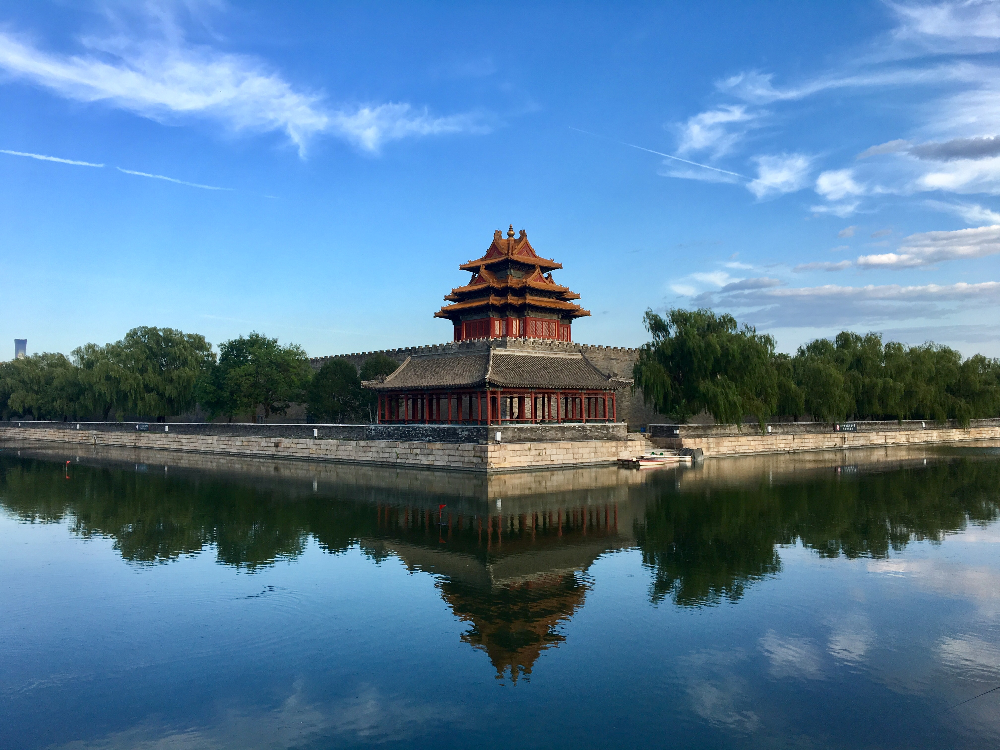

01 THE STORY
A city within
a city.
At the heart of Beijing, an extraordinary world waits behind red walls.
Built between 1406 and 1420, the Forbidden City was the imperial home of the Ming and Qing dynasties. Its grand halls and carefully ordered courtyards reveal how architecture expressed imperial power.
The Palace Museum opened here in 1925. Today, the former palace invites visitors to discover Chinese art, craftsmanship, and the stories held within its walls.
Read the museum's history (opens in a new tab)1420An imperial palace
1925A public museum
TodayA shared heritage
